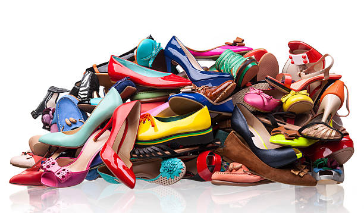

Giving Back with Every Step!
At Susan Waviatu Shoe Collection, we believe in the power of giving back. That’s why
we have made it our mission to provide shoes to those in need, especially children in
orphanages and underserved communities.
Through our shoe trade-in program,
you can donate your gently worn shoes, and in return, receive fair-priced footwear from our
collection. Your contribution helps bring comfort, dignity, and joy to those who need it most.
Step forward with us—because every pair makes a difference!